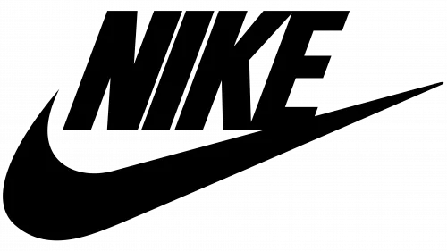
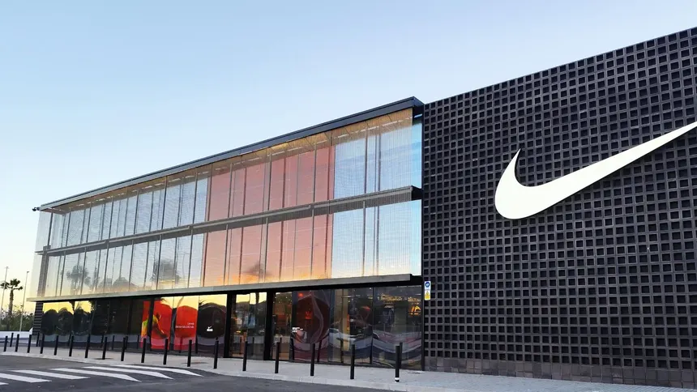
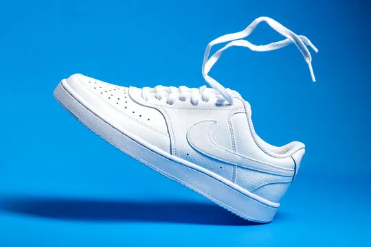
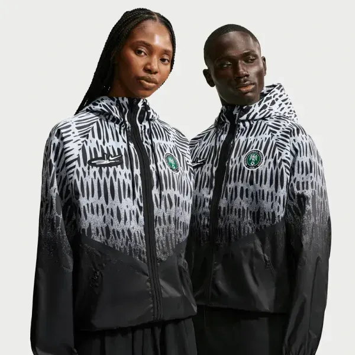
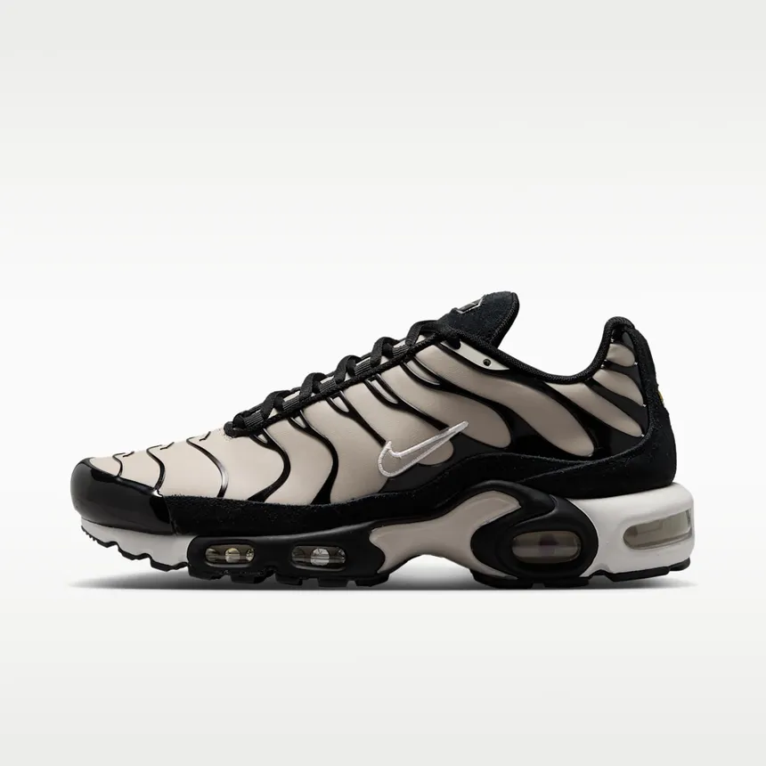

Conoce la historia, los productos y la tecnologia de la marca deportiva mas grande del mundo.

Nike nacio en 1964 en Estados Unidos con el nombre de Blue Ribbon Sports, fundada por Phil Knight y su entrenador Bill Bowerman. Al principio solo importaba zapatillas japonesas, pero en 1971 cambio su nombre por Nike, en honor a la diosa griega de la victoria.
Ver mas
El calzado es el producto mas famoso de la marca y tiene modelos para cada deporte. Las Air Force 1 y las Air Jordan salieron en los años 80 y hoy se usan mas como zapatillas de calle que para jugar al basquet.
Ver mas
Ademas del calzado, la marca fabrica remeras, camperas, shorts y camisetas de equipos de futbol de todo el mundo. La mayoria de su ropa deportiva usa telas livianas que dejan salir la transpiracion durante el entrenamiento.
Ver mas
Nike invierte mucho en investigacion para mejorar sus productos. Su tecnologia mas conocida es la camara Air, una bolsa de aire dentro de la suela que amortigua los golpes al correr y que se uso por primera vez en 1979.
Ver mas